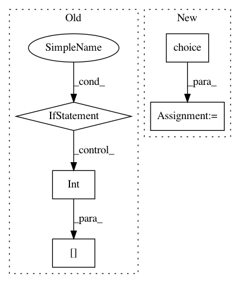

676ed97f4500511b1dca88ecb1f1ee25dc705d19,mne/forward/tests/test_make_forward.py,,test_forward_mixed_source_space,#Any#,298
Before Change
// setup two volume source spaces
label_names = get_volume_labels_from_aseg(fname_aseg)
vol_labels = [label_names[int(np.random.rand() * len(label_names))]
for _ in range(2)]
vol1 = setup_volume_source_space("sample", pos=20., mri=fname_aseg,
volume_label=vol_labels[0],
add_interpolator=False)
After Change
// setup two volume source spaces
label_names = get_volume_labels_from_aseg(fname_aseg)
vol_labels = rng.choice(label_names, 2)
vol1 = setup_volume_source_space("sample", pos=20., mri=fname_aseg,
volume_label=vol_labels[0],
add_interpolator=False)
vol2 = setup_volume_source_space("sample", pos=20., mri=fname_aseg,
In pattern: SUPERPATTERN
Frequency: 3
Non-data size: 5
Instances
Project Name: mne-tools/mne-python
Commit Name: 676ed97f4500511b1dca88ecb1f1ee25dc705d19
Time: 2020-04-30
Author: larson.eric.d@gmail.com
File Name: mne/forward/tests/test_make_forward.py
Class Name:
Method Name: test_forward_mixed_source_space
Project Name: mne-tools/mne-python
Commit Name: 676ed97f4500511b1dca88ecb1f1ee25dc705d19
Time: 2020-04-30
Author: larson.eric.d@gmail.com
File Name: mne/tests/test_source_space.py
Class Name:
Method Name: test_combine_source_spaces
Project Name: SpiNNakerManchester/sPyNNaker
Commit Name: 070003f70129fd8dd88364df6d2ae64c1d2a35f8
Time: 2017-11-24
Author: andrew.gait@manchester.ac.uk
File Name: spynnaker/pyNN/models/neural_projections/connectors/fixed_number_post_connector.py
Class Name: FixedNumberPostConnector
Method Name: _get_post_neurons